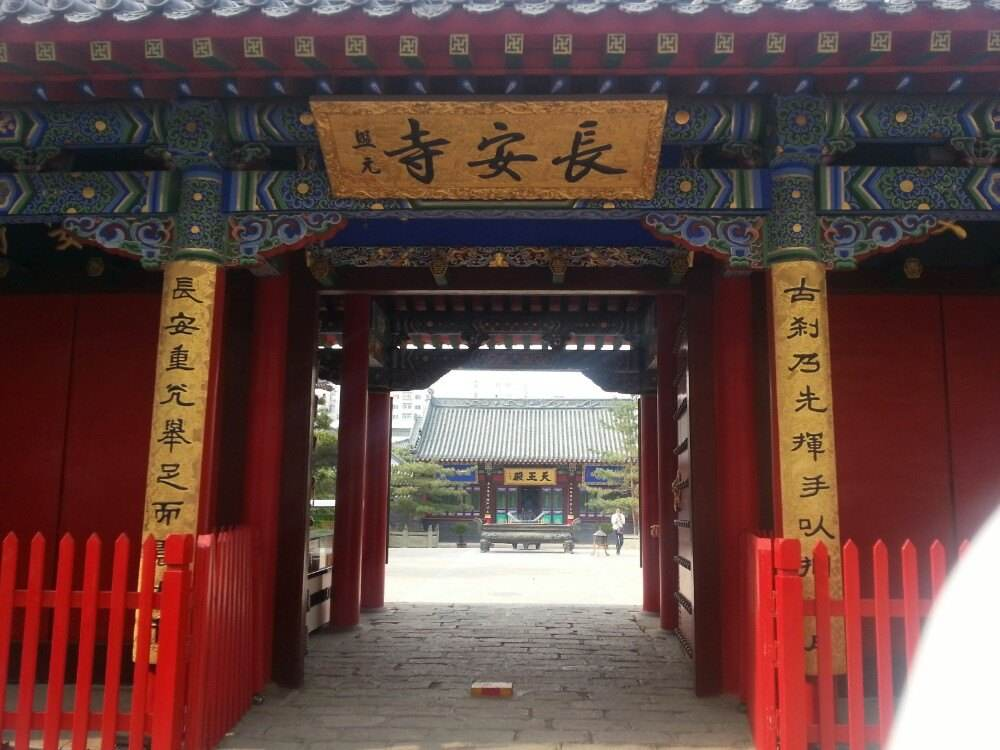
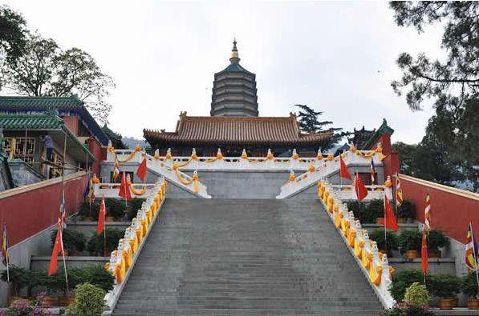
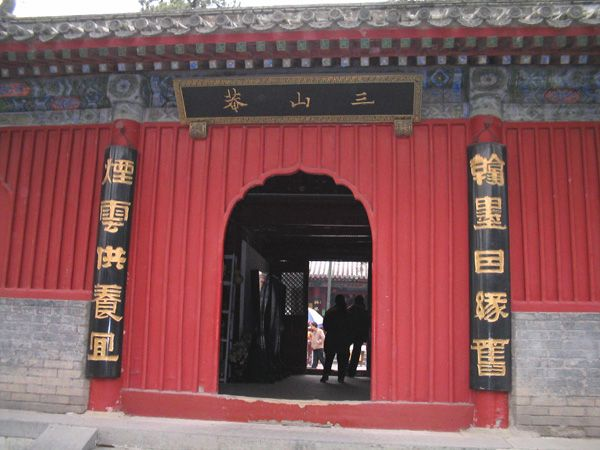
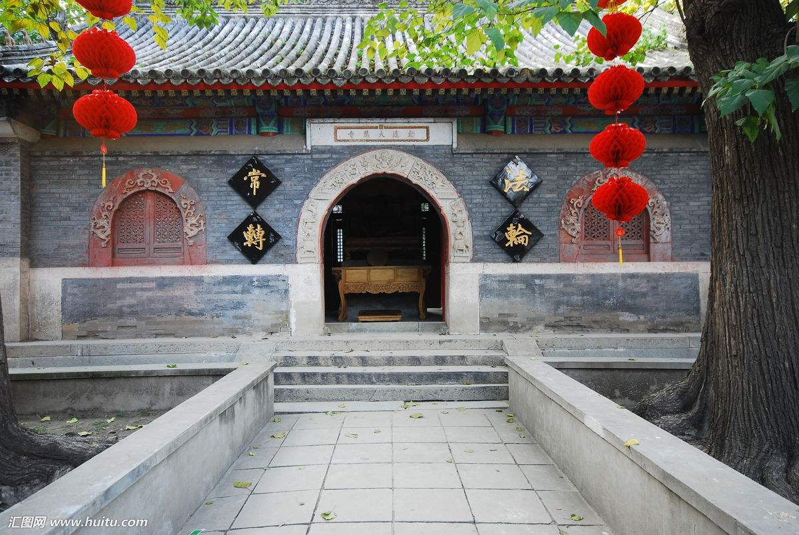
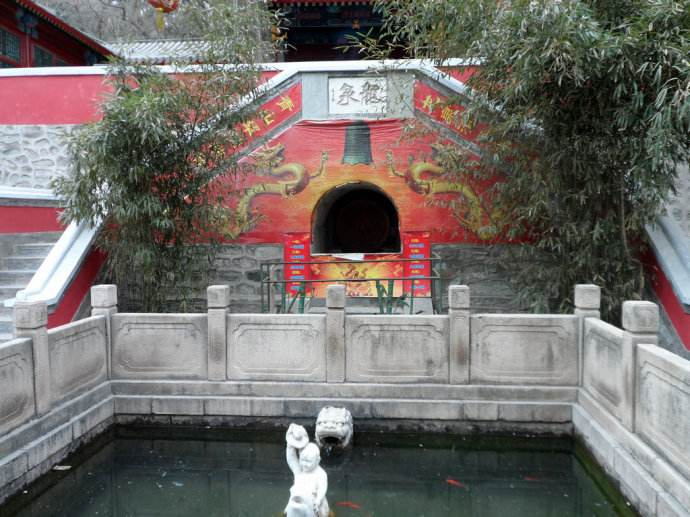
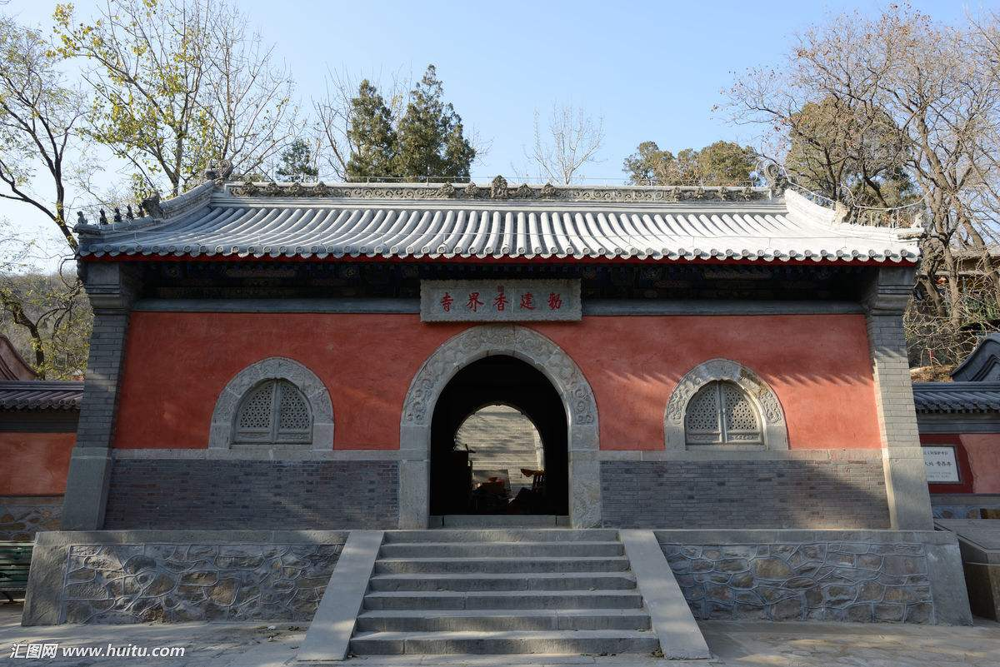
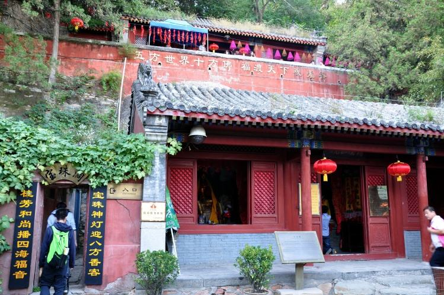
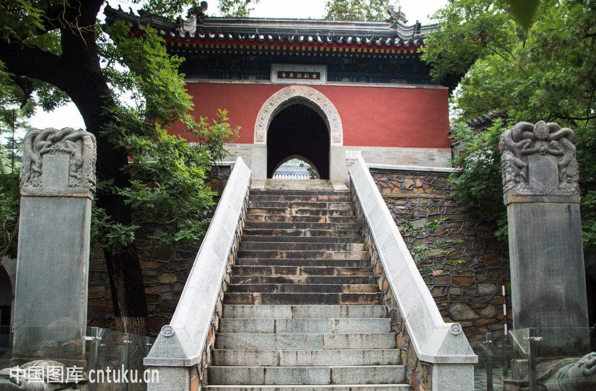

长安寺，是八大处的第一处寺院，又名善应寺和善应长安禅林。始建于明弘治十七年，后经清顺治十六年、清康熙十年两度重修，堂阁寮舍日臻完善、佛像器属一应俱备，遂成为明清时期西山诸寺中的一座名刹。
五百年后的长安古刹仍保持着昔日的建筑格局。寺朝东向、两进四合。有正殿三楹。由东向西依次为伽蓝殿，三世佛殿和观音殿。配殿三十间，分列于正殿两厢。两院由三世佛殿左右两月亮门贯通。布局严谨和谐；建筑精良宏丽，既有明代建筑特色的遗风，又为清代建筑官式做法之典范。
长安寺院中空地旧时曾是果园菜圃，如今已为紫荆、紫薇、玉兰等珍稀花木所取代。花季时节，入寺作闲庭信步，百花争荣景象常使人留连不已。
三世佛殿前有两棵奇松，虬根霜杆，枝繁叶茂，传说是元代的铅松，据说有“松树大仙”的美称。
长安寺于“文革浩劫”初被毁。殿中的佛像及法器皆已荡然无存。然而，明清时期的长安寺确曾有过别样的繁荣。
据明万历间的大学士余有丁描述：“寺中四松最奇。门列天兵十、状极诡异。庑下有五百罗汉”。此为长安寺初创时的风貌。
又据明崇祯间的史藉《帝京景物略》记载：“善应寺，殿佛不结趺，高几危坐，仪如中土，两庑塑罗汉五百，穿崖踏海，游戏极态。”容貌似中原汉人，体态呈恣意游戏状的罗汉像在其他寺庙中确属罕见。
(长安寺尚在修缮，未对外开放。)

灵光寺是八大处的第二处寺院。创建于唐大历年间，距今已有1300多年。
公元一九OO年，灵光古刹被“八国联军”炮火彻底摧毁。后经长达二十三年鼎力重建才得以再生。重兴后的灵光寺坐北朝南，纵向布局。南部为大悲院和金鱼池院。北部分别为方丈院、塔院、居士院和大雄宝殿。
公元二十世纪五十年代以来，经数次改扩建，灵光寺北部的古建群落已发生了彻底改变，殿堂阁舍的功用也已不同以往。
今日的灵光寺宝塔巍峨，殿宇宏丽，古木参天，游廊迤逦；更有流泉飞瀑临崖垂泻，锦鳞追逐游戏莲池；钟磬悠悠，香烟袅袅，景致分外迷人。
新山门殿面朝东南，高耸于数十级石阶之上，朱漆门窗、金黄瓦顶、玉砌雕栏、铜钟铁鼎，一派富丽堂皇。廊檐之下高悬一方巨匾，匾中是“佛牙舍利塔”五个贴金大字，书法敦厚凝重，这是中国前佛教协会会长赵朴初先生的墨宝；后檐额宇“世界和平”笔势张驰有度，此为前中国社会科学院院长郭沐若先生的亲笔。步入殿门，可见得幡幢高垂、锦绣精美；雕案俨然，法器琳瑯。泰国已故僧王赠送的铜胎贴金巨制释迦牟尼佛像居中供奉于莲花宝座之上，仪态肃穆安祥。
出山门殿后门便是塔院。在苍松翠柏的拱卫之中，一座雄伟壮丽的宝塔巍然屹立。这就是公元一九六四年由中国佛协主持建成的佛牙舍利塔。塔底是用汉白玉石铺砌的塔基、围栏和灯龛。中部镶嵌着青白石雕花门窗，上部是八角红砖塔身和十三层碧瓦密檐。顶部是施金一百二十两的鎏金宝瓶。
此塔内作七层阁室。底层是碑室。二层为佛牙舍利堂，堂顶装朱底贴金蟠龙藻井。雕花彩绘画屏前设金刚宝座，座上以纯金七宝金塔供奉释加牟尼佛灵牙舍利一颗。供案之上摆设着僧俗两界高层人士赠献的珍贵礼品。再上五层是珍藏各种经书和法器的阁室。
佛牙舍利塔北侧近年新增了两道风景，一是“心经壁”；一是“罗汉墙”。
心经壁于公元二OO一年落成。壁宽30米，高7米。基座是花岗岩，墙面为青白石，顶部以绿琉璃瓦覆盖。已故中国佛教协会会长赵朴初先生亲笔书写的《般若波罗密多心经》恭刊于经墙之上，260个贴金行楷大字，字字禅风道骨，句句沁血殚精，足使人叹为观止。
罗汉墙建成于公元二OO四年初，此墙宽25米，高8.35米。通体为花岗岩雕砌。墙分五层构造。底层为基座，顶层为廊檐,二、四层分别为吉祥图案，三层为核心，是五百罗汉图，综观罗汉图，其人物、鸟兽、花木、天梯、楼阁、祥云虽林林总总，却个个栩栩如生、呼之欲出。确是不可多得的佛教雕塑艺术珍品。
灵光寺塔院与鱼池院之间是一座五楹丹漆大厅，叫作“归来庵”。此厅北依青松、南临莲池、西接悬瀑翠竹、东延画廊古藤，四外风景如画。庵主人名端方，号陶斋。清光绪年间曾做过三地总督。最终因有违大清仪轨而被免职，之后便到八大处建宅隐居。常以“箧有三山记；胸藏五岳图”、“爱读秦碑兼汉篆；好写奇字到名山”自慰。昔日里，归来庵里曾张挂过许多文词典雅、书艺超绝的名人联语，鉴赏者无不为之陶醉。
归来庵南是一长方水池。一座小巧玲珑的汉白玉拱桥将其一分为二。桥东是辽招仙塔残基和一架明代古藤；桥西连一座四角攒尖顶敞亭。亭上悬匾“水心亭”。若值夏日，亭西峭壁悬瀑飞泻；亭外清池睡莲依依；池中锦鳞穿梭嬉戏，一派生机勃勃的景象。
这个方池原来是放生池。营造于清乾隆十六年，咸丰年间又将池水扩大，放进了许多锦鲤。清光绪年间，慈禧曾幸临灵光寺。 据说，一个夏末秋初的傍晚，慈禧来到水心亭下观鱼，鱼儿们似通灵性，都聚拢在慈禧面前欢蹦乱跳，慈禧一时兴起，唤过随行的太监潜入水中捉起一条最大的金鱼，摘下纯金耳环戴在鱼腮上面，封这条鱼为“领头”。僧人见此喜出望外，把这条鱼看作是圣物，日后便精心饲养起来。此事口口相传，游客纷至沓来，“水心亭观鱼”遂成为灵光胜境中的一大趣事。
金鱼池东岸有一座古塔残基。这就是始建于辽咸雍七年的画像千佛塔遗迹。原塔八棱十三层，通体洁白，十分壮观。但却在一九OO年八月同灵光寺一起被“八国联军”炮火摧毁。次年，承恩寺住持圣安和尚率僧重修灵光寺。一天，忽在塔基瓦砾中发现一石函，打开函盖又见到一个沉香木匣，匣盖上有铭文：“释迦牟尼佛灵牙舍利，天会七年四月廿三日记、善慧书”。圣安当众开启木匣，果然发现佛牙一颗。于是将佛牙舍利供奉于灵光寺禅堂。古塔虽坏，残基犹存，足堪凭吊。
南行数步，穿过月亮门便是大悲院。院中是大悲阁，阁中旧时供奉铜铸千手观音一尊，现为木雕千手观音所取代。阁前有碑两通，还有古楸树两株。皆可以观赏。

三山庵是八大处的第三处寺院，创建于金天德三年，距今九百余年。山门面朝东北，是一座布局精巧、构筑工美的四合院落。山门殿为三开间，左右各开角门一扇；正殿五楹并配有耳房两间；两配殿门户相对分列于正殿两厢。山门殿悬额“三山菴”；垂联“翰墨因缘旧；烟云供养宜”；正殿悬额“是大世界”，联题：“慈目静心法相；和风甘雨祥云”。此院额联皆为今人手笔。
东配殿外有一敞轩与其后门相联。两方横匾分悬于内外两额。内额题“建阳半幅精舍”；外额题：“翠微入画”。原匾皆为乾隆第六子永瑢题书。轩柱有联曰：“远水近山澄雾色；清风明月净禅心。”。这里，地势豁朗，视野开阔，临轩远眺，玉泉山塔，昆明湖水，紫禁城楼皆可尽收眼底；“春山杏林”、“虎峰觅翠”、“深秋红叶”、“层峦晴雪”等四时景致不时扑面而来。
人在三山庵，胸襟顿觉开阔，感慨何止万千。自古以来，多少文人墨客皆为三山庵诗情画境所倾倒而留下不可胜数的诗文画卷。有明代的《观流图》、《观泉图》和《观月图》；清代的《灵光指径》、《香界重游》和《乾隆松石流泉闲坐图》。
文墨者如此，佛门中的高僧大德对三山庵更是情有独钟。最著名者当数深得乾隆皇帝尊宠，得赐紫袈娑，得封“阐教禅师”尊号的贤首宗高僧达天通理禅师。他曾隐居在此注疏《法华经》和《楞严指掌疏》。清嘉庆十九年夏，大钟寺住持海峰源亮法师亦曾在三山庵居住疗养并同著名禅师崇理杲鉴一起共倡重修八大处证果禅林。
三山庵所占虽小却内藏珠玑，确是当时独领“三山”，名动宇内的“是大世界”。

大悲寺是八大处的第四处寺院，原名隐寂寺。创建于宋辽时代，距今九百余年。该寺独处丛林深处，层层殿宇依山势递升，错落有致，山门南向。
大悲寺的首层建筑是山门殿，硬山正脊灰筒瓦顶。檐下饰有丹青彩画，殿脊正中装饰“百鸟朝凤”砖雕图案。正檐下嵌有一方汉白玉寺额，上面镌着“敕建大悲寺”五个大字，字体健劲，是康熙大帝御笔。寺额下是汉白玉券门，自下而上对称浮雕白象、雄狮、腾龙、翔羊；门楣正中雕饰着三尊神像，正中一尊人面鸟喙，是佛经中大鹏金翅鸟的应化形象。券门两旁是石雕花窗，饰有蘷龙和忍冬草花纹，优美而庄重。两侧正脊门楼造型也很精致。
山门殿内居中是“大肚弥勒佛”坐像，眉眼如月、笑口常开，洋溢着一团喜气。四大天王分列左右，个个身披甲胄、手握法器、怒目圆睁、威风凛凛。这五尊神像都是近年的新作。
过山门北上，可见阶旁两池翠竹，黄皮绿叶，婆娑有声，十分可人。传为明代所植，原产于江南。
二重殿宇是大雄宝殿，殿脊正中饰“二龙戏珠”砖雕图案，两龙鳞爪分明，呈飘然欲飞之势，实为超绝之作。脊端的鸱吻和檐头的脊兽也不失脱俗之处。殿内居中供奉着释迦牟尼佛，胁侍为阿难、迦叶两大弟子。“十八罗汉”分列于两厢。
大雄宝殿中的十八罗汉均端坐于云石之上，悉心谛听释迦牟尼讲经说法，或若有所思，或舞器作法，个个活灵活现，堪称旷世之作。这里的十八罗汉雕像之所以不同凡响，是因为其作者是我国元代最为著名的雕塑家刘元。据《中国名人大辞典》记述：刘元，字康元，拜尼泊尔雕塑家阿尼哥学塑印度佛像，造诣称绝。当时京都名刹所塑佛像均出自他手。神韵逼真、天下称颂。他亲手所塑三皇雕像精湛绝伦，深得皇帝赞赏，两度御赐宫女为妻。并擢升官职为昭文馆大学士，由此可见刘元当时所取得的成就和地位。更为奇异的是，这十八尊罗汉像的胎体是用檀香木粉掺和细砂精制而成，七百余年后的今天，仍飘散着沁人心脾的檀香。
大雄宝殿后面是大悲殿。面阔五间，檐下悬“悲源海”额匾。 抱柱联为：“不动道场东方成坵墟；琉璃世界西向现弥陀。”额联题字皆是当代书家的手笔。殿中供奉一尊观音大士的彩雕坐像。表情悲天悯人，如同慈母。
大悲殿前有两株古老的银杏树，夏日枝繁叶茂，浓荫可蔽庭院；深秋时节黄叶纷落，碎金满地，这两株雄性的白果树距今已有七百余年高龄。
最后一层殿宇是药师佛殿，结构布局和油漆彩画仍采取清代官式做法。殿貌富丽而庄严。殿内供奉着药师佛、日光遍照菩萨和月光遍照菩萨。十二尊药叉神分列两边。这十五尊神像内胎皆为檀香木，外表以足金贴饰，给人以庄严华贵之感。
大悲寺后有一条浅沟，沟里丛生着一片野海棠，夏日花开时绯红满谷，甚是可爱。这里曾发生过一个发人深醒的故事。据说康熙年间，谷中有一眼山泉常流不懈，引得两匹金骡驹夜夜来此畅饮。一个贪人得知此事，便一连三年来此拴取。一天夜里，金骡驹果然又来了，贪人急忙抛出绳索套住了一匹，不料那驹子力大无比，竟将那贼人拖下悬崖活活摔死了。如今，两块形似金骡驹的山石依然静静的卧在谷中，相传是大悲寺中的高僧施展法术后的遗物。

龙泉庵是八大处的第五处寺院。明末清初时此处并存着两座寺院。一为慧云禅林；一为龙王堂。前者建于明洪熙年间；后者建于清顺治二年，清道光年间两寺合二为一。
龙泉庵坐西朝东，寺门为硬山正脊门楼，青石匾额上刻着“龙泉庵”三字。
进入寺门便是一雕栏方池，池壁以青石围砌，分外坚固洁净。池中碧水盈盈，清澈可鉴。它源自龙王殿下的拱形石洞，又经方池西壁石龙头口泻出，细流如注，经年不息。这水便是远近闻名的“龙泉”。这“龙泉”之水甘醇清冽，无半点污尘。昔日有位自号“锄月老人”的隐士曾作过一首七言古风《甜水歌》赞美这龙泉庵里的“龙泉”水，《甜水歌》一下子传唱遐迩；“龙泉水”一时间名动京城。
院西有殿堂三楹，前有卷棚抱厦一间。殿厦构造都很精良别致。厦下有抱柱联曰：“威镇蛟鼍依泽国，德施江海赖安澜”。殿门外有联语是：“圣德施恩涤雨露；神威乘泽仰云霓。”殿内供着泥塑彩绘龙王雕像，面呈威严、貌若帝王。旁边分列雷公、电母、风伯、雨师等群像，也都十分生动传神。这殿便是“龙王堂”。
龙泉庵北部是另一组殿堂，由东向西依次为文昌阁、大雄殿、卧游阁和祖师堂。
文昌阁正门朝东，前悬横匾 “俯瞰大千”；后悬横匾“得月先”。殿内供奉“伽蓝神”关公坐像。长髯飘飘，威风凛凛。
大雄殿面阔三楹，檐下匾额题写着“灵通宇宙”，抱柱联语为“佛德巍巍丽中天之杲日；慈风荡荡振大地之春雷”。黑底红字，庄严醒目。大殿之中莲花宝座之上供释迦牟尼坐像，左右是阿难、迦叶尊者。
大雄殿与文昌阁之间，南首西边是“妙香室”，东边是“听泉小榭”。小榭为敞厅式，精巧别致。檐下横匾书“听涛山房”，柱间有“当户老松生夕籁；满山红叶入新诗”木制楹联。“小榭”南门外还有一副联语“溪声尽是广长舌；山色无非清净身。”语出佛典《陀罗尼经》，极尽龙泉庵溪声山色之妙。
大雄殿北边为“闻妙香院”，院内多植珍珠梅等花木，尤其是两架古藤萝，春夏之交，绿叶垂条，紫英缤纷，生机无限。若能约三五知己于藤荫之下聊作小酌，确有恍入仙境之感。
龙泉庵西倚平坡山，南临翠微谷，院落之中松高柏巨，气爽风凉；又有龙泉之水叮咚流泻，四时不歇，其幽雅清静可堪八刹第一。
清康熙年间著名诗人汪文柏曾赋七律诗一首以记龙泉庵之胜：
松底涤池汇伏泉，苍髯偃盖镜中悬。
一泓湛碧浮金鬛，几树微黄蜕暮蝉。
云锁磐声僧闭户，日移刹影客笼鞭，
茗芽细泼真甘冽，归带余香在舌边。
清乾隆帝也曾幸临龙泉庵并做《御制龙王堂》诗：
古庙山坳里，披榛磴道赊。
树生刹竿石，鸟啄净橱沙。
水府石林秘，香台花雨斜。
所希惠时若，霈泽始京华。
如今，园方在龙泉庵院内开设了 “龙泉茶社”，社内环境优美，设施完善，服务周全，是游山小憩、品茗看山的极好去处。

香界寺是八大处的第六处寺院。坐北朝南，占地近二十亩。整个寺院规模宏大，殿宇巍峨，门户重重，构造精良。全寺建筑依山取势，层层高趋，叠叠有致，其雄伟壮丽的寺容堪为八大处诸寺之冠；其丰富珍贵的内藏也不愧为三山之首屈。
香界寺创建于唐代，始称“平坡大觉寺”，后经历代重修，先后更名为“大圆通寺”、“圣感寺”和“香界寺”。
香界寺布局严整，左右对称，沿中轴线由南向北依次为：山门殿、大乘门、天王殿、大雄殿、西方三圣殿、藏经楼。
山门殿面阔三间，汉白玉券门，檐下嵌汉白玉石额，上刊“勅建香界寺”五个丹漆大字，是乾隆帝御笔。殿中对塑“哼”、“哈”二将立像，二者戎装怒目，状极威猛，不失“金刚力士”之孔武。
进大乘门是一平展院落。院中有钟鼓楼左右峙立。此二楼均为重檐歇山卷栅顶楼阁式造型，高大精美，足以显耀“勅建香界寺”巨刹之威仪。鼓楼下玉石围栏内是一棵古老的油松，数枝巨杈遒劲盘曲，枝叶交互分披于大乘门和钟鼓楼之上，有如苍龙闹海，状极雄奇，因而有“龙松”之美誉。
登上几级石阶便是天王殿。券门和槛窗均以汉白玉石精雕而成。殿内两侧列泥塑彩绘四大天王。面色各异，法器有别，形象威猛可畏。迎面供奉手持“佛手”、阔面宽睃、笑貌可掬的弥勒菩萨坐像。此塑像源于我国五代时期的一位高僧，真名“契比”，人称“布袋和尚”。传说他经常背着一个布袋入市，见物即乞，出语无定，随处寝卧，形如疯癫，自称是“弥勒”化身。中原地区寺庙中供奉的“大肚弥勒佛”便是以他的形象塑造的。天王殿北是圆通殿，殿内居中供奉着木胎贴金西方三圣佛像。中为西方极乐世界教主阿弥陀佛，左右为两肋侍观世音菩萨和大势至菩萨。
殿前有两通型制高大、雕造精美的石碑。东首石碑，龟蚨螭首，碑阳精刻康熙十七年《御制圣感寺碑文》，碑阴镌刻的是《御制香界寺碑文》，此碑为乾隆十四年重修圣感寺工毕后所立。西侧是一方青石巨碑，碑座四周精雕着梅鹿海马图文，碑阳为“大悲菩萨自传真像”；碑阴为“敬佛”二字。此二字大如斗口，庄严凝重，是康熙大帝的御笔。
据有关专家考证，“大悲菩萨自传真像”是典型的明代佛教雕塑艺术珍品。其艺术风格与北京法海寺的明代壁画一脉相承。这幅雕像，采用的是传统的阴刻平雕手法，线条流畅，气韵传神。此雕像头戴法冠，项佩璎珞，丰腮广额，唇续髭须，一派雍容华贵气象。这是观音菩萨的庄严法像。
该碑左侧还有一篇阴刻行草诗文。字体隽秀酣健，是清嘉庆皇帝的御笔。
据寺僧们传说，这块石碑是康熙皇帝发现的。当年，康熙帝来香界寺礼佛，行至大雄宝殿前忽然双腿一软跪在了地上，眼前倏然浮现出了观音菩萨的音容，康熙大为惊诧，忙令僧众诵经礼忏，自己也连连念诵菩萨名号，好一阵才回过神来。随即命人在跪倒之地挖掘。结果挖出了这块碑，康熙更觉得灵验，于是即兴挥毫恭恭敬敬地写下了“敬佛”二字，为表深受佛法感化，便又为寺院取了个新名叫作“圣感寺”。
最后一层殿宇为大雄宝殿，面阔五楹，朱漆明柱，门窗雕饰着精美的三交六椀梭花纹样，殿中供奉着贴金三世佛和十八罗汉坐像。殿前一株七叶树为明代所植。
过大雄殿，再上十八级台阶便是藏经楼院。院中楼宇为后罩楼型制。正北面的藏经楼面阔五楹，上下两层；两厢配楼各六间，也为两层，楼宇间木柱梁枋彩画精美、鲜艳夺目。院中有两株七叶树分植左右，高大繁盛，据说是从西藏移植而来，弥足珍贵。楼东是一株茎干古朴的玉兰树，传为明代所植。老干古拙，旁出新枝，春著繁花，晶莹圣洁，叹为奇景。
藏经楼东面有一处古朴的古建群落，这便是清乾隆皇帝的避暑行宫，俗称“行宫院”。行宫院院门西向，院内栏楯相接，游廊环绕，雕梁画栋，奇石兀立，超然意趣，令人目不暇接。乾隆皇帝曾于乾隆十二年夏、十三年冬、十四年春、十八年秋四度幸临香界寺和行宫院，并在这里留下了许多优美的诗篇和超绝的墨迹。
千年古刹香界寺以其巍峨壮丽的殿宇楼阁，博大精深的佛家风范而感动着一代又一代帝王显宦和文人墨客。他们不但频频往游，且多留下了感人至深的不朽华章。

宝珠洞是八大处的第七处寺院。该寺居于平坡山绝顶稍下处。出六处北便门，沿石阶小径西攀一里多路便可到达。路边遍植黄栌、火炬等林木，春夏青翠欲滴、深秋殷红夺目。
山路忽转处，一片疏林掩映着一座红墙灰瓦的卷棚顶古建筑，这便是“老爷庙”。庙堂三开间，前拥抱厦。因高踞于山巅巨岩之上而越显得高峻突出。该殿居中供奉关圣帝君坐像。关云长红颜长髯，金甲绿袍，威仪凛凛。周仓牵赤兔马在左；关平捉青龙偃月刀在右，都十分威猛。
昔日，此庙明柱上曾垂挂一副怪联：“日 晶 安天下；月朋 朤定乾坤”。曾几何时，这联语中的几个怪字弄得无数达官显贵、墨客骚人瞠目结舌，如坠云里雾中。
传说，某一天，一位自命不凡的“大才子”慕名而至。揣摸半晌，也未能解得几个怪字的奥妙，不禁两颊涨红，低头无语。正值此尴尬之时，庙门忽开，一老僧翩然而至。“才子”不耻请问其详，老僧笑答：“听老辈相传，上联读‘日暖晶华安天下’，下联读‘月朋娑罗定乾坤’，还有横批‘亘古一人’”。言罢，老僧转身而去，时至今日，这副怪联依旧在文人学者中“做怪”。
过关帝庙南行数步，便是一座精致的清式牌楼。此牌楼四柱三间、歇山瓦顶，檐下斗拱纵横交错；丹青彩画富丽明快，额枋嵌汉白玉石额两方，外额题“欢喜地”，内额题“坚固林”，金光闪烁，分外醒目。匾额上都钦有硃印“乾隆御笔”。
距牌楼不远，有一巨石被半副抱厦所覆盖。石面已斑驳蚀损，上存依稀行草诗文，落款处犹可辨一枚硃印“乾隆御笔”痕迹。这便是清乾隆十三年初冬，弘历皇帝闲游宝珠洞时留下的三首七言绝句。其中一首是：“极顶何来洞穴深，仙风吹送八琅音。个中疑有天龙护，时作人间六月霖”
宝珠洞规模不大，寺门朝东北，殿宇面东南。有敞亭一座，殿宇两重。院落东南是三开间卷棚顶敞亭，名叫“眺远亭”。灰墙红柱，雕枋画楦，很显富丽。临崖凭栏远眺，真可一目千里，心胸豁然开朗。悬崖之下是观音大士殿。面阔三间，额题“诸法正观”。殿中所供如意观音像为今人所塑。观音殿后崖之上建有阿弥陀佛殿三间，配有两间耳房。殿内旧时曾供泥塑贴金阿弥陀佛坐像，今天已经被三世佛立像所取代。
神秘的“宝珠洞”就在观音殿后；阿弥陀佛殿下。洞高不足六尺，深广一丈有余。洞壁卵石粒粒，黑白相杂、晶莹光润，恰似珍珠粘连闪烁，该洞由此得名。昔日，洞中曾供奉着一尊肉体真身贴金佛像，像前置一牌位，上书“钦命赐紫圣感堂中兴第一代传临济正宗三十三世桂芳岫翁老和尚位”。旁边供案上一玻璃匣中盛装其生前所穿着的缎制黄巾紫履。可惜今已无存，代之者为汉白玉石坐像。
桂芳和尚，又名海岫，祖籍河北，幼年出家白衣庵。清康熙年间入圣感寺（今香界寺），精研佛理、戒行超众，深得康熙尊重。所以重修圣感寺后，康熙钦命他为开山第一代住持。桂芳和尚毕生功业尚有《御制圣感寺碑文》和康熙御制诗为证。碑曰：“寺僧海岫，笃实持躬，勤劳砥行，箪瓢布衲，十载经营，重新殿庑。”诗曰：“脩然老衲净尘缘，台殿参差起瑞烟。驯鸽檐前应受戒，游鳞花下亦参禅。”
桂芳和尚还有一个“鬼王菩萨”的封号，北京西山一带至今仍流传着许多“鬼王菩萨”的故事。
据说，乾隆年间，新疆天山南部准噶尔部霍集占兄弟策动叛乱，乾隆帝御驾亲征。扫平叛乱后，乾隆得到了小和卓木部台吉和扎麦的小女儿。因其貌美体香遂被封为香妃。但她入宫后矢志不从，最终被崇庆皇后赐死。乾隆不忘香妃，思念成疾，御医百治不愈。宫中便怀疑是香妃鬼魂作祟。于是有人便奏请恩准桂芳和尚入宫一试。桂芳领旨后，亲率僧徒一百零八名入宫、诵经做法七七四十九天， 最终果然奏效。此事一时名震京师。都传说桂芳和尚是能治鬼魂的活佛，于是乾隆便赐封他为“鬼王菩萨”。
又传说是，桂芳和尚圆寂时，是在宝珠洞中坐化的，世寿一百四十岁。乾隆念其救命之恩前来吊唁。但见桂芳虽死犹生，双目直视京城，恐怕有碍大清社稷安危，旋即在宝珠洞前勅建观音大士殿以遮其目；又在洞顶建阿弥陀佛殿以压其气。又赐额“欢喜地”、“坚固林”以示褒奖抚慰。今日看来，这宝珠洞寺院格局也确有许多耐人寻味之处。
秋高气爽时节，出宝珠洞南角门，登临平坡山顶，确可得“绝顶远眺”的意境。紫禁城楼、永定河水、翠微山脉皆可尽收眼底，万千悠思尽也随云而去。纳兰性德曾在此作词一首《望海潮•宝珠洞》，流传千古。附后以飨读者。
汉陵风雨，寒烟衰草，江山满目兴亡。白日空山，夜深清呗，算来别是凄凉。往事最堪伤。想铜驼巷陌，金谷风光。几处离宫，至今童子牧牛羊。
荒沙一片茫茫。有桑干一线，雪冷雕翔。一道炊烟，三分梦雨，忍看林表斜阳。归雁两三行。见乱云低水，铁骑荒冈。僧饭黄昏，松门凉月拂衣裳。

证果寺是八大处的第八处寺院，初创于唐天宝八年，距今已有一千二百多年。是京城最为古老的佛教寺院之一。
证果寺坐北朝南，全寺殿宇分为三组，中路由南向北分别为山门殿、天王殿和三世佛殿。东部是方丈院；西部是秘魔崖和其他附属建筑。
山门左近有一方深池，青条石围砌，宽广丈余，名叫青龙潭。青石券顶，额镌“阿耨达流”四字梵语，意思是“能觉知一切真理”。多雨时节，潭水常溢出池口且冰凉可人。
过青龙潭沿石板路上行百余步，即可望见山门殿，危耸于二十余级青条石阶之上，气势逼人。殿额石刻“古刹证果寺”是明英宗朱祁镇御笔。阶西一株数百年古槐长势奇伟、荫蔽广阔，左右两通龟蚨螭首石碑均为清道光二年所立。西碑《镇海寺旧碑记》铭文为当朝内阁大学士、著名书法家祁隽藻所书；东碑《中兴秘魔崖证果寺十方住持缘起碑》为当年著名高僧崇理杲鉴撰文，南书房翰林、著名书法家程恩泽手书。
《镇海寺旧碑记》详细记述了一则卢师降龙的生动传说。
说是唐朝天宝年间，一位姓卢的居士年迈辞官后一心只想修禅，于是便自造一叶独木小舟，孤身一人从江南乘舟而下，不用篙橹、一任小舟随波逐流。数日后漂到了桑干河方才止住。卢居士便弃舟登岸，见四周山色非比寻常，又见秘魔崖下洞空如室，欣然叹道：“此吾居也！”，于是便稍事清扫，入室梵修。
又说是，很久以前，黄河龙门有两青龙潜匿，不时喷妖气为害。大禹治水经过龙门，一怒之下用神锹铲除龙窝，二龙争斗不过，悻然逃至苦海幽州，隐藏在秘魔崖下青龙潭中修炼。后见卢师到来，心中大怒，决定与之较量一番。一天中午，天空忽然阴云密布，风雨大作，两条雨柱瓢泼而降，直逼秘魔崖。卢师正在小睡，惊醒时已经浑身透湿。仰头一看，是两条孽龙正在空中喷云吐雾，便顺手拿起一个铜钵置于案上，一通咒语将雨水尽收钵中，又向铜钵吹气三口，那铜钵便霍地腾空而起，直向孽龙飞去。一声霹雳，钵水炸开，只打的二龙抽筋拔骨般地疼痛，顿时跌入潭中。没过几日，忽有两童子前来拜师，愿为沙弥，以担柴烧饭侍奉卢师，卢师收下二童子。后来适逢连年大旱，皇帝颁诏聘请能祈雨的人，二童子揭下皇榜，回至寺中，纵身跃入青龙潭，化作两条青龙腾入空中广播云雾、普降甘霖，旱情顿解。原来，二童子就是那两条孽龙，因受佛法感化才弃恶从善，行云化雨。卢师也因此名震京师，被皇帝诏封为“感应禅师”，又赐封其所居之山为卢师山，更勅建了感应禅寺以表彰卢师勋德。
山门殿内是新塑的“哼哈”二将立像，表情十分威猛。大雄殿内现供新塑的“横三世佛”，正中是释迦牟尼佛，左为阿弥陀佛，右为药师佛。东跨院是方丈院，院内假山瘦劲玲珑，花草林木掩映扶疏，环境幽雅异常。院外皆为坡地，松涛滚滚、凉风习习，更可环顾林壑峰峦之美，是夏日避暑胜地。西部是一组园林式建筑。地势低迥，狭长曲折。院前殿堂三楹，前出抱厦，旁配耳房，清雅别致。殿东开一宝瓶石门，上面雕饰着蟠龙莲花图案，门边刊刻着唐人常健的名句：“曲径通幽处，禅房花木深”。过石门是一宽敞庭园，园内翠竹千杆，生机盎然，竹边是一座名为“环中环”的青石假山，雄奇浑厚。再沿曲径北行不远，眼前豁然开朗，但见一黝暗巨岩横空斜出，状若怒狮之口。这便是饮誉千秋的秘魔崖。崖下是一天然石室，崖壁间刻有“天然幽谷”、“别有洞天”等字。临崖有民国二十五年所建“招止亭”一座，内墙嵌石刻一方，上镌《秘魔崖招止亭记》，婉述坐爱秘魔胜境之感怀，作者袁翼；书者袁毓麟。登上招止亭览胜，或于清晨，或在傍晚。清晨可得旭日金辉染醉千树的“高林晓日”；傍晚可得五彩云霞笼罩下的“卢师夕照”。
民国人田树藩所著《西山名胜记》道：“秘魔崖风景雅洁无比，游人每多留连。文人观赏题壁，触动诗情，到此更难舍去”。
秘魔崖上的题壁诗原来不下百余首，皆为鸿儒绝唱，然却终为风雨所磨蚀，唯余翁同和、宝竹坡及林琴南等聊聊数首。现仅录翁同和律诗一首，以飨同好。
衮衮中朝彦，何人第一流。
苍凉万言疏，悱恻五湖舟。
直谏吾终敬，长贫尔岂愁。
何时霜叶下，同醉万山秋。